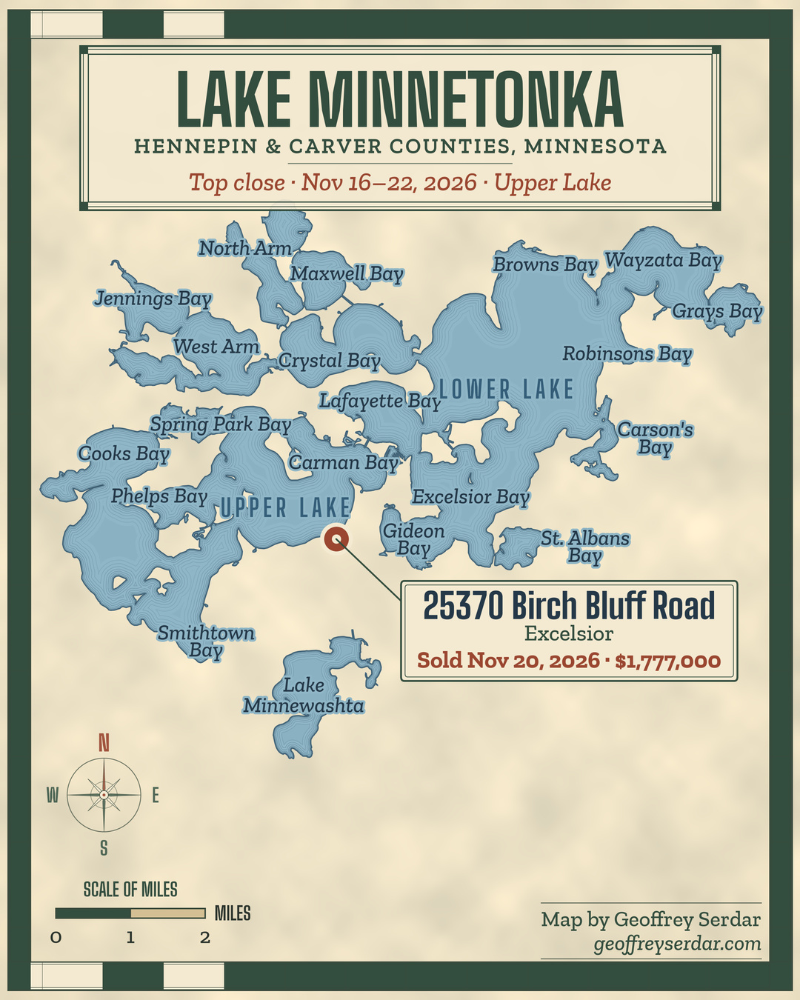

The Upper Lake of Lake Minnetonkaand the stone house on Enchanted Island
By Geoffrey Serdar
Out on the west end of Lake Minnetonka, on Enchanted Island, there is a stone house that one family built and kept for decades.
In November it sold for the first time. Here is a little more of its story, a map of where it sits, and how this end of the lake fits together.
Sold November 13, 2026 for $4,890,000
Steve and Pamela Anderson built this house in the late 1980s, and it stayed theirs from then on. It had never been on the market before this sale.
Steve started Acoustical Surfaces, the soundproofing company in Chaska, in 1980. Later he made the gift that began a scholarship in memory of his mother, Gloria, for students at Westonka and Orono high schools. Steve passed away in 2024, and this fall the family sold the house.
There is a putting green on the lawn and a private beach down at the water.
If you knew the Andersons and something here isn’t right, text me and I’ll fix it.
The late Robert Beugen’s cedar house near Crescent Beach was his from 1993. It sold on November 20, 2026 for $1,777,000. The house is in Shorewood, with an Excelsior mailing address.
A short walk east of the house, where Birch Bluff Road meets Pleasant Street, is Crescent Beach, a small sandy public beach on the Upper Lake. It sits partly in Tonka Bay and partly in Shorewood, and the two cities own it together, with Tonka Bay keeping it up. People swim there, and it is easy to put in a kayak or a canoe. In summer Hennepin County tests the water there every week.

The pin sits on the south shore of the Upper Lake in Shorewood. The house faces north across open water.
The week it sold
The week of November 16 to 22, the cedar house near Crescent Beach was the highest reported price among the 24 homes that closed in the towns around Lake Minnetonka. On my weekly list it is counted under Excelsior, the town on its mailing address.
In the other towns that touch the Upper Lake, Mound had one close, at $735,000, and Minnetrista had one, at $710,000. Orono had one close whose sale price has not been reported yet, and Spring Park had none. These are whole-town numbers, on the water or not.
Others are still in the works. As of November 23, 11 homes in Mound, 17 in Minnetrista, 6 in Shorewood and 3 in Orono were under contract but not closed yet, and deals like that can still fall apart. I post every closed sale around the lake each Monday, town by town, on the weekly list.
How the Upper Lake fits together
Start with the name. The Upper Lake is not the upper part on a map. It sits low and to the west, and the Lower Lake is the big water to the north and east. The names follow the water. Most of it comes in through Six Mile Creek at Halsted Bay, on the far west end, and it leaves at Gray’s Bay on the east, where it spills into Minnehaha Creek. Upstream is upper.
For a long time the two halves barely touched. Where the Narrows bridge now runs between Orono and Tonka Bay, there was only a shallow, mucky creek. People called it Hull’s Narrows, after Reverend Stephen Hull, who had a claim beside it. In 1873 it was dredged wide enough for steamboats, and the Governor Ramsey, the lake’s first, came through carrying visitors out to what was then the remote Upper Lake. The boats kept getting bigger, so a wider channel was cut a little to the north, and it opened in 1887. That is the Narrows you cross today. The old channel is still there, partly filled in for the highway, and it goes by the name Old Channel Bay.
Come through the Narrows heading west and the water breaks into bays and islands. Carman Bay opens first, and Spring Park Bay and Cooks Bay reach in toward Spring Park and Mound. Farther out you are among the islands. Phelps Island is one, and Enchanted Island lies just south of it, with Phelps Bay between them. Long before any of the houses, the Dakota held Enchanted Island as a sacred place. A tornado in 1906 took down much of the old timber on these islands, and the cottages and homes built after it gave them the feel they have now. South of Enchanted Island the water opens wide toward Smithtown Bay and the Victoria side, and Halsted Bay is the last water to the west.
The south shore has its own small history. A little way west of the cedar house near Crescent Beach, John W. Mann platted 28 lake lots in 1882 and named them Birch Bluff, Upper Minnetonka, and the county still files those lots under that name. To the east, Tonka Bay sits on the strip of land between the Upper and Lower Lake.
Five towns touch this water: Mound, Minnetrista, Spring Park, Orono and Shorewood. The lines between them can surprise you. The stone house has a Mound mailing address, but the county lists it in Minnetrista. The house by Crescent Beach has an Excelsior mailing address, but it sits in Shorewood, which was the leftover part of Excelsior Township until it became its own village in 1956. Out here, the name on the envelope and the city on the tax bill don’t always match.
If you are reading from another state, here is the picture that helps. Lake Minnetonka is not one bowl of water with one town around it. It is a string of bays, and each end of it keeps its own pace. I live in Excelsior, on Minnewashta Park, not out on this water. What I can do is tell you which town a shore really belongs to, what has sold, and what a home here would likely bring. The numbers change every week. The shape of the water doesn’t.
Homes on this stretch of Shorewood are in Minnetonka Public Schools, ISD 276, and Minnewashta Elementary is under a mile from the cedar house.
A lot of this shore’s story lives in people’s memories and old shoeboxes. If you can help with any of these, text me or send a note, and I’ll add it with your name if you like.
Who built the cedar house by Crescent Beach in 1976?
Memories of Robert Beugen at the lake.
Old photos of Birch Bluff or Crescent Beach.
Stories of the Anderson family and the stone house on Enchanted Island.
The Upper Lake is the west end of Lake Minnetonka. It meets the Lower Lake at the Narrows, the channel between Orono and Tonka Bay.
Why is it called the Upper Lake when it sits south and west on the map?
Because the names follow the water, not the compass. Most of the lake’s water comes in through Six Mile Creek at Halsted Bay on the west end and leaves at Gray’s Bay on the east, into Minnehaha Creek. The west end is upstream, so it is the Upper Lake.
Which towns touch the Upper Lake?
Mound, Minnetrista, Spring Park, Orono and Shorewood.
Where is Enchanted Island?
Enchanted Island is in the Upper Lake, just south of Phelps Island, with Phelps Bay between the two. The stone house that sold in November 2026 has a Mound mailing address and sits on the Minnetrista tax roll.
What sold on the Upper Lake recently?
A 1976 cedar house on the south shore in Shorewood, just west of Crescent Beach, sold November 20, 2026 for $1,777,000. Earlier in November, the stone house on Enchanted Island sold for $4,890,000.
Where is Crescent Beach?
On Birch Bluff Road at Pleasant Street, on the south shore of the Upper Lake. It is a small public swimming beach that Tonka Bay and Shorewood own together.
Send me the address. I’ll look at the recent sales near you myself and write you a one-page read on what your home would likely sell for today. It isn’t an automated estimate, and there’s nothing you have to do with it.
Please add your first name and a working email.
By submitting, you agree Serdar+Partners at Compass may contact you by call or text at the number you provide. Consent is not required to buy or sell. Reply STOP to opt out. Privacy
Thank you. I’ll look at the recent sales near you and send your read soon.